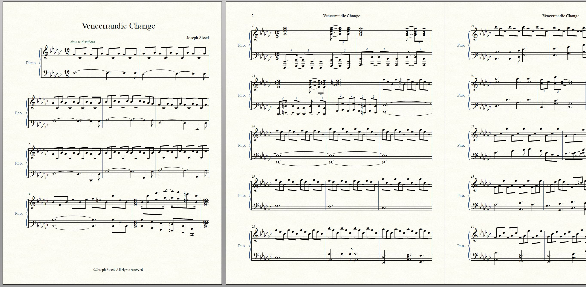

Believer in God
I am a proud member of the Church of Jesus Christ of Latter Day Saints. I worship Heavenly Father and Jesus Christ, and seek to build up those and the world around me.
The gospel of Jesus Christ is filled with His power, which is available to every earnestly seeking daughter or son of God. It is my testimony that when we draw His power into our lives, both He and we will rejoice.
Russell M. Nelson
I believe a faith in Jesus Christ can benefit anyone who will put in the time for it. I highly recommend one reading the Bible and The Book of Mormon in their search to find peace in Christ.
Research and IT
I have a strong interest in improving the way that we do research online. These are among the common online research engines I have analyzed to improve algorithms and methods of conducting accurate online research.
Google, Wolfram Alpha, and Family Search are powerful examples of utilizing different methods to validate and sift through information on the internet.Asside from my research, I enjoy making doing service, enjoying time with my family, and writing music. Here is a portion of a composition I wrote.
I love talking with individuals about my experiences, and discussing with intestested persons about theirs. Please feel free to contact me.